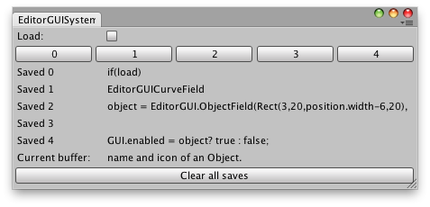

EditorGUIUtility.systemCopyBuffer
public static string systemCopyBuffer;
Description 描述
The system copy buffer.
Use this to make Copy and Paste work for your own application. The
systemCopyBuffer captures any text that is selected on the machine. This does
not specifically have to be text that is selected in Unity. Reading and writing
systemCopyBuffer is possible.

Have more than 1 saved "copy" command.
// Example that shows up to 5 strings. These strings are captured from Copy // commands on the machine. The Current buffer at the bottom of the window shows whatever string // is copied. The string can be copied to one of the five Save rows when the Load toggle is // five Save rows when the Load toggle is off and one of the horizontal buttons is pressed.
using UnityEngine; using UnityEditor;
public class SystemCopyBufferExample : EditorWindow { string[] savedCopies = new string[5]; bool load = false;
[MenuItem("Examples/Example showing systemCopyBuffer")] static void systemCopyBufferExample() { SystemCopyBufferExample window = EditorWindow.GetWindow<SystemCopyBufferExample>(); window.Show(); }
void OnGUI() { load = EditorGUILayout.Toggle("Load:", load);
EditorGUILayout.BeginHorizontal(); for (int i = 0; i < savedCopies.Length; i++) if (GUILayout.Button(i.ToString())) if (load) EditorGUIUtility.systemCopyBuffer = savedCopies[i]; else savedCopies[i] = EditorGUIUtility.systemCopyBuffer; EditorGUILayout.EndHorizontal();
for (int j = 0; j < savedCopies.Length; j++) EditorGUILayout.LabelField("Saved " + j, savedCopies[j]);
EditorGUILayout.LabelField("Current buffer:", EditorGUIUtility.systemCopyBuffer); if (GUILayout.Button("Clear all saves")) for (int s = 0; s < savedCopies.Length; s++) savedCopies[s] = ""; }
void OnInspectorUpdate() { this.Repaint(); } }
Note: iOS and Android do not support this feature.